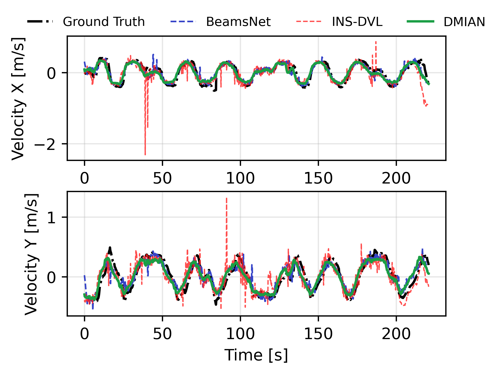
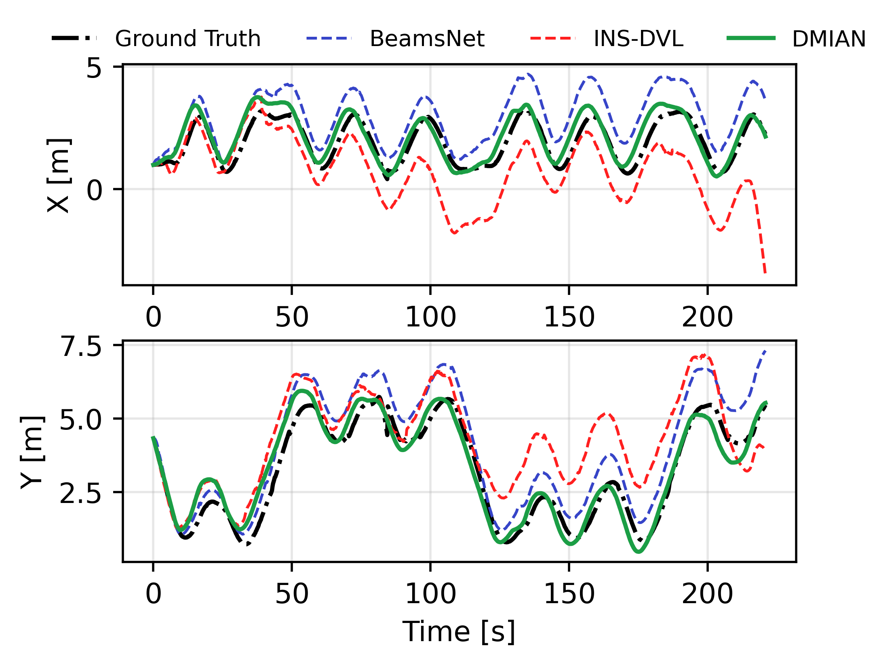
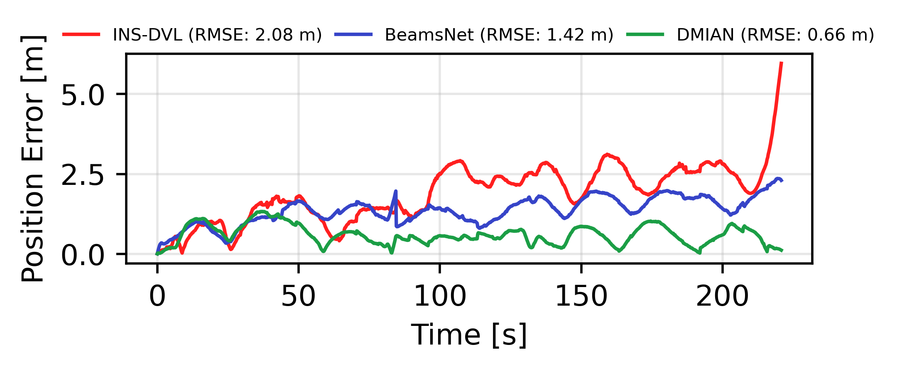
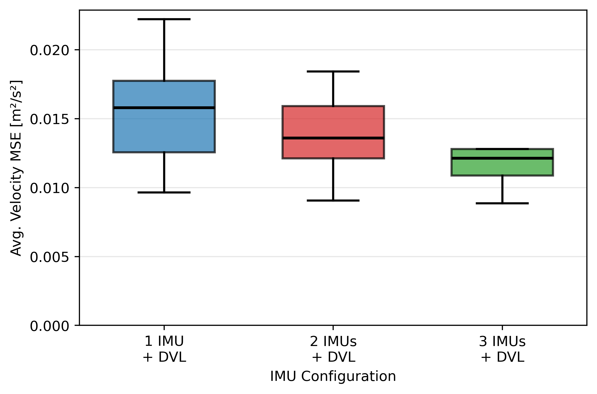
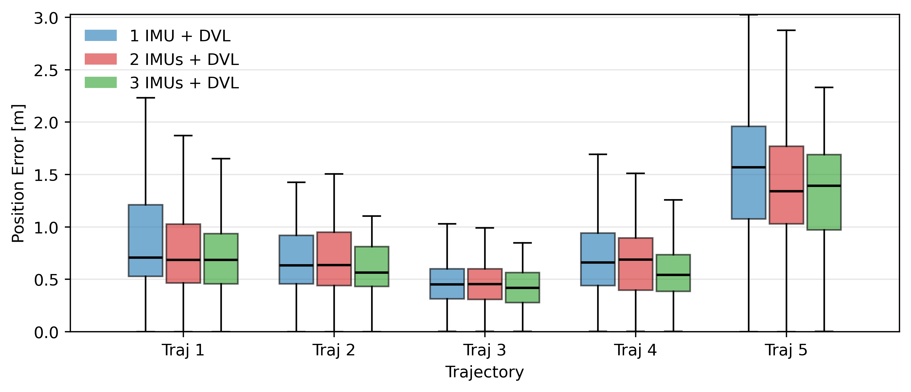
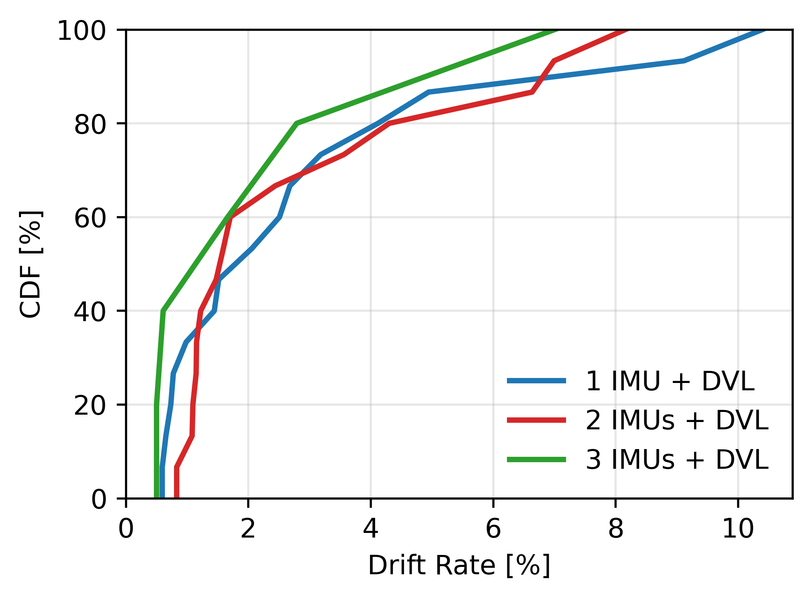

(GPU & CPU)
(3 IMU + DVL)
(3 IMU + DVL)
velocity
collected
Abstract
Learned inertial odometry has advanced rapidly across domains, especially in GNSS-denied environments. This paper introduces a learning-based approach that combines multiple IMUs with a DVL to improve velocity estimation for marine vehicles. The proposed method employs a multi-head attention Long Short-Term Memory network to fuse temporally and spatially distributed inertial signals with aiding velocity measurements. The model outputs both velocity estimates and their corresponding covariances, which are integrated as measurement updates within an Extended Kalman Filter (EKF).
This hybrid design allows learned features to complement traditional state estimation while maintaining filter consistency. The system is implemented and validated on the H2OmniX Autonomous Surface Vehicle through both manual and autonomous trajectories. The multi-IMU and DVL fusion provides the most accurate results, whereas models with reduced IMU configurations continue to deliver reliable estimations when additional data are unavailable.
Method
The network follows a multi-head LSTM architecture that fuses temporal information from up to three independent IMUs and a DVL sensor. Each IMU branch processes six-dimensional input sequences (tri-axial accelerometer and gyroscope), while the DVL branch processes three-dimensional velocity measurements. All sensor branches are implemented as separate LSTM heads with 64 hidden units, followed by fully connected fusion layers.
The output hidden states from all branches are concatenated into a joint feature vector. Two output heads predict the velocity components and their associated uncertainties respectively. The model assumes a diagonal covariance structure — one independent uncertainty per velocity component — which reduces complexity and guarantees a positive-definite measurement covariance for EKF integration.
Training uses a two-phase objective. The first 20 epochs optimize Mean Squared Error (MSE) to stabilize velocity regression. The remaining epochs switch to Gaussian Negative Log-Likelihood (GNLL), jointly optimizing prediction accuracy and uncertainty calibration.

Figure 1. Multi-head attention LSTM architecture. Each sensor modality is processed by an independent LSTM branch before fusion into a joint representation that feeds the dual velocity and uncertainty output heads.
Results
DMIAN is compared against BeamsNet (Cohen & Klein, 2022), a state-of-the-art learning-based DVL velocity estimator, and a classical INS-DVL fusion baseline. All methods are trained and tested on identical dataset splits and preprocessing.
| Metric | BeamsNet | INS-DVL | DMIAN |
|---|---|---|---|
| MAE (m/s) | 0.29090 | 0.28898 | 0.19695 |
| MSE (m²/s²) | 0.15682 | 0.13968 | 0.05770 |
| RMSE (m/s) | 0.36255 | 0.33059 | 0.22875 |
| R² Score | 0.9021 | 0.9045 | 0.9137 |
Bold values indicate best performance.
| Metric | BeamsNet | INS-DVL | DMIAN |
|---|---|---|---|
| MAE (m) | 2.55717 | 0.91329 | 0.86942 |
| MSE (m²) | 9.01657 | 1.29841 | 1.05917 |
| RMSE (m) | 2.66893 | 1.06528 | 0.94585 |
| R² Score | 0.75329 | 0.76766 | 0.87540 |
DMIAN achieves ~65% lower position RMSE vs. BeamsNet and ~11% improvement over INS-DVL.

Figure 2. Velocity time series (x and y axes). DMIAN maintains alignment with ground truth across low and high-dynamic motion segments.

Figure 3. Position time series (x and y axes). BeamsNet exhibits frequent outliers; INS-DVL shows noise jitter; DMIAN closely tracks ground truth.

Figure 4. Four representative evaluation trajectories. Trajectories 1–3 are manually driven; Trajectory 4 is autonomous. DMIAN maintains the closest alignment to ground truth across all four.

Figure 5. Position estimation error over time for Trajectory 2. DMIAN (RMSE 0.50 m) caps the error at a lower level than BeamsNet (0.62 m) and INS-DVL (0.73 m).
Ablation Study
The 1 IMU+DVL, 2 IMU+DVL, and 3 IMU+DVL configurations vary only the number of IMU inputs — architecture and training procedure remain identical. To avoid selection bias, the 1 IMU and 2 IMU configurations report average performance across all possible IMU combinations.
| Metric | 1 IMU + DVL | 2 IMU + DVL | 3 IMU + DVL |
|---|---|---|---|
| MAE (m/s) | 0.19756 | 0.19747 | 0.19695 |
| MSE (m²/s²) | 0.05763 | 0.05728 | 0.05770 |
| RMSE (m/s) | 0.22973 | 0.22951 | 0.22875 |
| R² Score | 0.9132 | 0.9137 | 0.9137 |
The impact of additional IMUs is more pronounced in position accuracy than in instantaneous velocity metrics.

Figure 6. Velocity RMSE distribution across trajectories per IMU configuration.

Figure 7. Position error distribution per trajectory and IMU configuration. Gains are most visible in dynamic trajectories.

Figure 8. CDF of drift rate across the full test set. The 3 IMU configuration achieves lower drift for ~70% of test data.

Figure 9. CDF of position RMSE. The 3 IMU configuration reaches any given error threshold with higher probability.
Citation
@article{batos2025dmian, title = {DMIAN: Deep Learning-Based Multi-IMU Fusion for Enhanced Marine Aided Navigation}, author = {Bato\v{s}, Matko and Na\dj{}, \Djula}, year = {2025}, note = {Laboratory for Underwater Systems and Technologies (LABUST), University of Zagreb} }